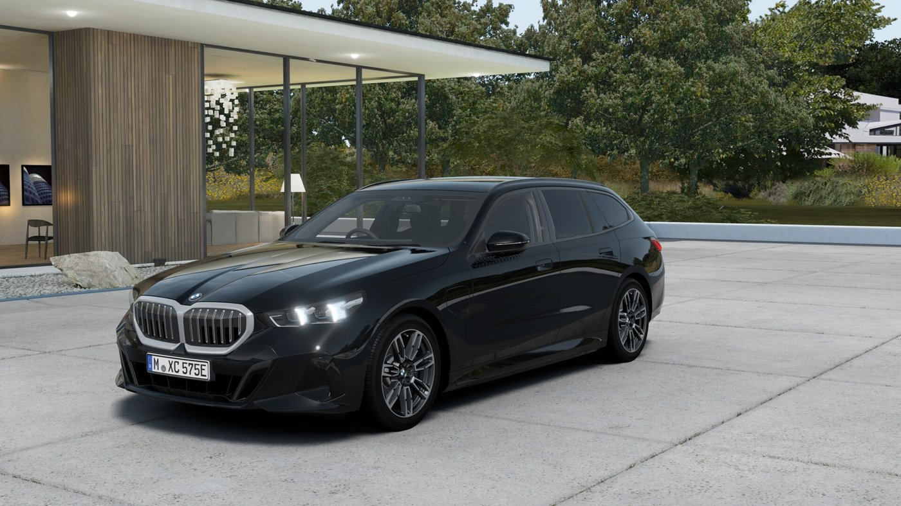
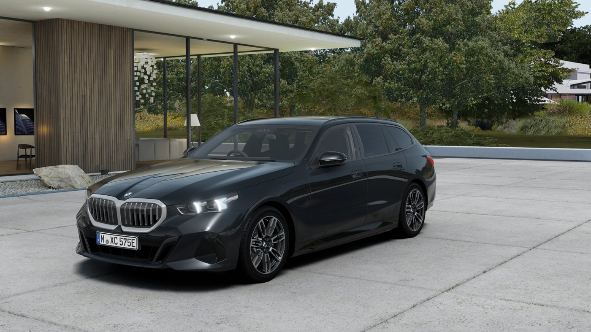
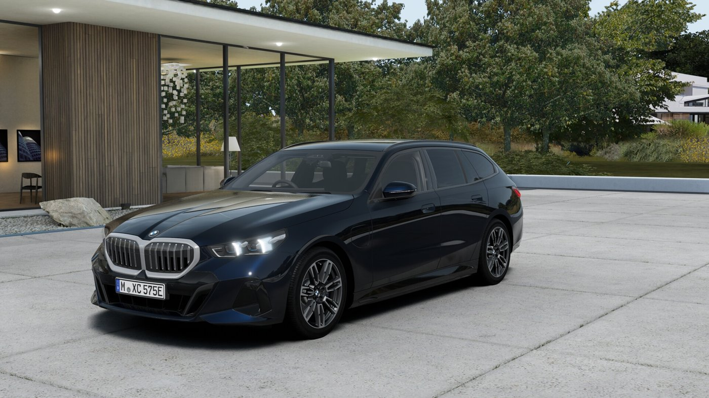
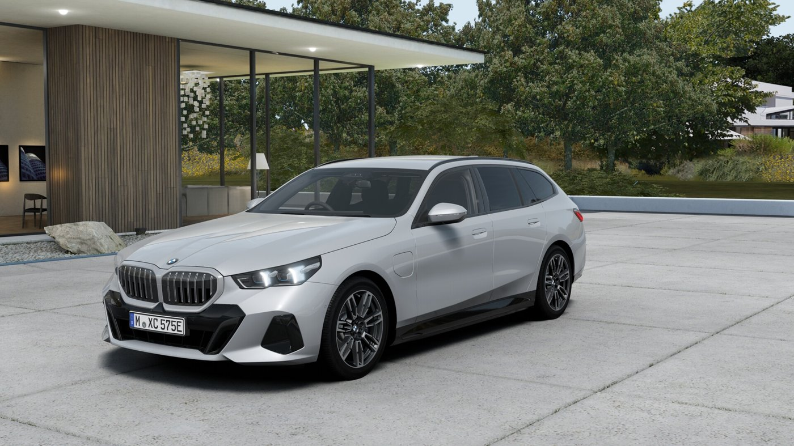

BMW 530e Touring · Hedin Ruxley
We will pay
your deposit.
Every penny of it. On seven cars, and seven only.
All £4,500
of it.
Not deferred. Not buried in the monthly. Covered by us, before you drive away.
So this is all
you plan around.
£743Per month, from
48Months
10,000Miles a year
Seven cars.
Then it is gone.
Dan SellsBMW · Hedin Ruxley
dan-sells.co.uk
Personal Contract Hire. Figures include VAT. Finance subject to status, UK residents 18+. Hedin Automotive is a credit broker, not a lender.